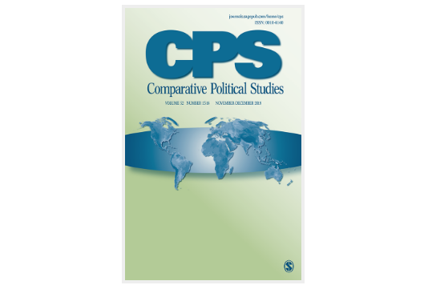

收录于合集
期刊简介 :
Comparative Political Studies(CPS)《比较政治研究》一年出版14期，是从事跨国和国内比较政治研究的专业杂志，它致力于在前沿方法、理论和实证研究等领域进行深度分析，其过去5年的影响因子为4.262 ，在176个政治科学类期刊中排名第12位。

本期目录：
1.再探新教伦理：加尔文主义与工业化
The Protestant Ethic Reexamined: Calvinism and Industrialization
2.联盟共识、议题关注与内阁统治
Coalition Agreements, Issue Attention, and Cabinet Governance
3.拉美的政策机制与经济问责制
Policy Regimes and Economic Accountability in Latin America
4.缔造地方性和平的政治条件：对肯尼亚社群冲突解决的比较研究
The Political Conditions for Local Peacemaking: A Comparative Study of Communal Conflict
5.跨过庇护陷阱：墨西哥的组织能力和组织需求
Evading the Patronage Trap: Organizational Capacity and Demand Making in Mexico
6.事半功倍：团体吸纳、宪法制定和民主
Being There Is Half the Battle: Group Inclusion, Constitution-Writing, and Democracy
7.欧洲发展的路径依赖：中世纪的政治、冲突和国家建设
Path Dependence in European Development: Medieval Politics, Conflict, and State Building
8.不对称的问责：对政府竞选承诺评估偏差的调查实验
Asymmetric Accountability: An Experimental Investigation of Biases in Evaluations of Governments’ Election Pledges
9.经济地理、政治不平等和美国建国13州的公共物品提供
Economic Geography, Political Inequality, and Public Goods in the Original 13 U.S. States
10.街头示威和媒体议程：对抗议活动的议程设置能力的动态分析
Street Demonstrations and the Media Agenda: An Analysis of the Dynamics of Protest Agenda Setting
再探新教伦理：加尔文主义与工业化
题目： The Protestant Ethic Reexamined: Calvinism and Industrialization
作者： Jeremy Spater，杜克大学政治学博士，普林斯顿大学政治学系博士后研究员。Isak Tranvik，杜克大学政治学系博士候选人。
摘要： 文化差异能影响经济变革吗？马克思·韦伯曾指出，新教对勤俭的追求——特别是他们的工作伦理——激励了新教徒发展出了资本主义经济制度从而推动了快速的经济变革。时至今日，学者们仍然在辩论韦伯假说在经验层面的有效性，这些争论见诸政治经济学中文化与经济变革关系的大量文献中。在本文中，我们重新检视了欧洲宗教改革后的新教与经济变革之间的关系。由于瑞士西部的部分地区在瑞士宗教改革期间在地方当局的推动下改信了新教，但是其他地区仍然属天主教势力范围，因此我们运用了准实验的方法。我们利用19世纪的瑞士人口普查数据进行模糊空间断点回归分析去检验韦伯的假说，发现瑞士新教徒集中的沃州工业化速度要快于他们的天主教邻居弗里堡。
Can cultural differences affect economic change? Max Weber famously argued that ascetic Protestants’ religious commitments—specifically their work ethic—inspired them to develop capitalist economic systems conducive to rapid economic change. Yet today, scholars continue to debate the empirical validity of Weber’s claims, which address a vibrant literature in political economy on the relationship between culture and economic change. We revisit the link between religion and economic change in Reformed Europe. To do so, we leverage a quasi-experiment in Western Switzerland, where certain regions had Reformed Protestant beliefs imposed on them by local authorities during the Swiss Reformation, while other regions remained Catholic. Using 19th-century Swiss census data, we perform a fuzzy spatial regression discontinuity design to test Weber’s hypothesis and find that the Swiss Protestants in the Canton of Vaud industrialized faster than their Catholic neighbors in Fribourg.
联盟共识、议题关注与内阁统治
题目： Coalition Agreements, Issue Attention, and Cabinet Governance
作者： Heike Klüver，柏林洪堡大学比较政治行为系主任、教授。Hanna Bäck，隆德大学政治学系教授。
摘要： 为什么联盟中的政党会详细解决一些政策问题，而很少将其他议题纳入执政联盟的议程？尽管联盟共识是立法期限内决定政策制定的政策平台，然而我们对其中的内容却知之甚少。在本文中，我们阐明了为什么执政联盟中的议题变化会如此之广，同时我们指出，内阁冲突显著地影响了政党对议题的关注因为政党有强烈的动机去通过谈判来约束它的执政盟友。然而，我们认为这一效应取决于执政联盟的偏好与议题的重要性。我们通过对1945年到2015年24个西欧和东欧国家181个政党224个协议进行建库分析，其结果支持了本文假设。据此，我们认为，政党协议限制了“部长级漂移”协议。
We argue that intra-cabinet conflict positively affects issue attention as parties have stronger incentives to negotiate a detailed policy agenda that constrains their coalition partners. However, we expect that this effect is conditioned by preference tangentiality and the salience of an issue among coalition partners. Our theoretical expectations are tested drawing on a new data set based on a comprehensive content analysis of 224 agreements negotiated by 181 parties between 1945 and 2015 in 24 West and East European countries. We find support for our hypotheses and conclude that parties draft agreements to limit “ministerial drift.”
拉美的政策机制与经济问责制
题目： Policy Regimes and Economic Accountability in Latin America
作者： Ryan E. Carlin，乔治亚州立大学政治学助理教授、人权和民主中心主任。Timothy Hellwig，印第安纳大学伯明顿分校政治学教授和欧洲门户网站的学术主任。
摘要： 债务危机推动拉美快速从国家主导的发展模式转向新自由主义模式，这一转型引发了关于民主质量的讨论。其中大部分讨论都关注于回应性问题，但本文考察了经济政策体制是如何影响问责制的，即政策机制如何影响公民追究行政人员责任的能力。我们认为这种能力在政策机制更为集权的情况下被强化了，在市场导向更强的政策机制即新自由主义模式下被弱化了。中央集权的政策体制下，选民倾向于将经济问题的责任归咎于政府，而在新自由主义模式下，这一责任则被归咎于私营部门。通过对17个国家的政策导向、经济状况和总统批准的时间序列分析支持了上述观点，而基于个体层面的补充分析结果则与政策机制通过责任机制影响问责制的观点相一致，这些论证都有助于理解拉美新左派及其领导人的一些政治行为。这项研究的结果表明，与“华盛顿共识”占主导地位的时代相比，拉美近来的主政者们通过采纳非正统的政策体制改善了问责制。
The shifts from state-led development to neoliberalism in Latin America have prompted debates on the quality of democracy. Although most discussions focus on responsiveness, we examine how economic policy regimes influence accountability. How do policy regimes affect citizens’ ability to hold executives to accounts? This ability, we argue, strengthens where policy regimes are more statist and weakens where policy regimes are more market oriented. Time-series analyses of policy orientations, economic conditions, and presidential approval in 17 countries support this proposition, whereas complementary analyses at the individual-level are consistent with claims that policy regimes influence accountability via a responsibility mechanism. Findings from this study imply that by embracing heterodox policy regimes, recent Latin American executives have improved accountability compared with the era in which the “Washington Consensus” held sway.
缔造地方性和平的政治条件：
对肯尼亚社群冲突解决的比较研究
题目： The Political Conditions for Local Peacemaking: A Comparative Study of Communal Conflict Resolution in Kenya
作者： Emma Elfversson，乌普萨拉大学和平与冲突研究中心博士后研究员。
摘要： 政府偏见如何影响族群冲突中和平协议的前景？政府偏见对当地族群冲突的发生和变化都有着强大的影响，但是它以什么方式影响冲突的解决，学界对此还未进行足够的探究。作者认为，政府偏见使得冲突各方不太可能克服承诺难题，因为它们不相信政府愿意确保或者支持它们达成的任何协议。结果是，偏见降低了冲突各方可能达成和平协议的机率。本文通过对肯尼亚国内的四个案例进行系统的比较后支持了这一论点。同时，本文也区分了由战略利益导致的偏见和由政府与冲突各方之间的关系所导致的偏见，并发现前者更为持久而后者更容易受政治动荡影响，因而为调停冲突创造了可能。
How does government bias affect prospects for peace agreements in communal conflicts? Government bias has been shown to have a strong impact on the incidence and dynamics of localized ethnic conflict, but the way that it affects conflict resolution remains underexplored. I argue that government bias makes the conflict parties less likely to overcome the commitment problem, because they cannot trust the government’s willingness to guarantee or uphold any agreement they reach. Consequently, bias reduces the chances that the parties are able to reach a peace agreement. A systematic comparison of four cases in Kenya provides support for this argument. I also distinguish between bias related to strategic interest and bias related to relationships, and find that the former is more durable, whereas the latter is more likely to be influenced by political turnover, thereby opening up possibilities for peacemaking.
跨过庇护陷阱：
墨西哥的组织能力和组织需求
题目 ：Evading the Patronage Trap: Organizational Capacity and Demand Making in Mexico
作者： Brian Palmer-Rubin，马奎特大学政治学系助理教授。
摘要： 组织在何时能够代表其经济部门的广泛利益，而又在何时只是代表了组织内部一小部分成员的利益呢？本文探讨了墨西哥的农业和小企业协会组织在何种情况下会要求制定纲领性政策，在何种情况下只是寻求庇护。与基于阶级身份的解释不同，本文揭示了组织能力的来源如何塑造着需求制定的策略。那些能够从内部产生选择性利益的组织更能够参与提升产业竞争力的纲领性政策，那些不能在内部解决成员挑战的组织则容易陷入到庇护陷阱中，即一个不断自我复制的循环。在这个循环中，人们专门寻求那些能够自由支配的私人物品。本文通过对墨西哥两个农业组织的过程追踪分析得出结论。对经济性利益团体的原始调查分析则在更为广泛的意义上证明了，相比于阶级，组织能力能够更好地预测政策需求。
When do organizations broadly represent the interests of their economic sectors and when do they narrowly represent the interests of members? This article investigates how agricultural and small-business organizations in Mexico make demands for programmatic policies or patronage benefits. Contrary to explanations based on the class of members, I show that the source of organizational capacity shapes demand-making strategies. Organizations that generate selective benefits internally are able to engage in programmatic policies that shape sectoral competitiveness, whereas organizations that fail to solve membership challenges internally are vulnerable to the patronage trap, a self-reproducing cycle wherein they become specialized in demand making for discretionary private goods. I generate this argument through process tracing of two agricultural organizations in Mexico. Analysis of an original survey of economic interest organizations provides broader evidence that organizational capacity is a better predictor of policy demands than social class.
事半功倍：团体吸纳、宪法制定和民主
题目： Being There Is Half the Battle: Group Inclusion, Constitution- Writing, and Democracy
作者： Todd A. Eisenstadt，美利坚大学政府系教授。Tofigh Maboudi，芝加哥洛约拉大学政治科学系助理教授。
摘要： 本文使用原始数据集评估了过去40年中世界范围内195部新宪法对民主水平的影响，认为当同时考虑大众参与和团体吸纳这两个因素对宪法制定过程的影响时，团体吸纳更为重要。基于宪法实施数据集，本文研究表明，相较于大众参与，团体吸纳对民主水平有更多的改善。尔后作者呈现了一些宪法制定失败的典型案例，并且这些案例都发生在个人参与比团体吸纳更为重要之时。本文表明，即使在以社交媒体（埃及和冰岛）、焦点小组和讨论会（智利）等形式经历了前所未有的大众参与浪潮之后，仅凭大众参与仍不能制定出能够有效提升民主水平的宪法；而且有时甚至都不能顺利颁布新的宪法。作者通过这些案例证实了缺乏团体吸纳的大众参与注定失败。作者表明，即使一些案例中大众参与水平较低，但案例中高度的团体吸纳确实会改善民主水平（如2014年的突尼斯宪法和1991年的哥伦比亚宪法）。
Using an original data set assessing the effect of the 195 new constitutions worldwide over the past 40 years on levels of democracy, this article argues that when popular participation and group inclusion are both considered, inclusion is what matters. After showing that group inclusion generates more improvements in levels of democracy than mere participation in our data set of implemented constitutions, we address some of the prominent cases of constitution-writing failure that occur when individual participation is valued more highly than group inclusion. The article shows that even after unprecedented waves of popular participation through social media feedback (Egypt and Iceland) and focus groups and workshops (Chile), participation alone cannot generate constitutions that improve levels of democracy, or, sometimes, even the very promulgation of new constitutions. Indeed, using these cases as illustrations, we show how participation without inclusion is doomed to failure. We then show that high inclusion cases, even if they involve low participation (such as Tunisia 2014 and Colombia 1991), do generate democracy improvements.
欧洲发展的路径依赖：
中世纪的政治、冲突和国家建设
题目： Path Dependence in European Development: Medieval Politics, Conflict, and State Building
作者： Avidit Acharya，斯坦福大学政治学系助理教授。Alexander Lee，美国罗切斯特大学政治学系助理教授。
摘要： 在中世纪，大多数欧洲国家政体的运作都遵循这样一个规范，即在（王位）继承顺序上只有君主的男性近亲才享有特权地位。当没有这样的（男性）继承人时，继承纠纷更容易发生，因为远亲和女性继承人都会对王位提出要求。这些纠纷往往产生冲突，从而破坏现有制度并阻碍经济发展。在中世纪，一个欧洲国家君主如果缺少男性继承人，那么可能会对该君主统治下地区的发展轨迹产生有害影响。为了证明这一论点，本文展示了那些（在中世纪）更可能缺少男性继承人的地区如今比其它地区更为穷困。本文的研究发现强调了中世纪在欧洲发展历史上的重要性，并且揭示出微小的冲击如何与制度和规范相结合，从而形塑长期的发展路径。
During the Middle Ages, most European polities operated under a norm that gave only the close male relatives of a monarch a privileged place in the order of succession. When no such heirs were available, succession disputes were more likely, with distant relatives and female(-line) heirs laying competing claims to the throne. These disputes often produced conflicts that destroyed existing institutions and harmed subsequent economic development. A shortage of male heirs to a European monarchy in the Middle Ages could thus have harmful effects on the development trajectories of regions ruled by that monarchy. We provide evidence for this by showing that regions that were more likely to have a shortage of male heirs are today poorer than other regions. Our finding highlights the importance of the medieval period in European development and shows how small shocks can work in combination with institutions and norms in shaping long-run development paths.
不对称的问责：
对政府竞选承诺评估偏差的调查实验
题目： Asymmetric Accountability: An Experimental Investigation of Biases in Evaluations of Governments’ Election Pledges
作者： Elin Naurin是哥德堡大学政治学讲师。Stuart Soroka，密歇根大学传播学、传媒学与政治学教授、社会研究所政治研究中心的研究员。Niels Markwat，哥德堡大学SOM学院政治学系博士生。
摘要： 代议制民主理论的核心思想之一是选民会奖励表现好的政府而惩罚表现差的政府，对这一机制的经典解释是执政者的成败会受到对称的评估。然而许多研究指出，政府因失败受到的惩罚可能远比因成功获得的奖励多。政府经常会通过实现其竞选承诺以维持执政地位，但是我们并不清楚这些承诺的兑现与违背将如何影响大众对政府的支持。本文揭示了这样一种倾向，政府因未兑现承诺受到的惩罚远多于兑现承诺获得的回报。作者进行了两项大规模、真实度极高的在线调查实验（N=13000, 10000），受访者都得到了一系列竞选承诺。作者发现，就政府评估而言，违背承诺往往比兑现承诺影响更大；而兑现承诺又会减少来自非支持者的认可，进而抵消支持者带来的边际收益。同时，支持度的变化与党派关系并不大。这些发现为政治行为的不对称性提供了证据：虽然在某一时刻，履行承诺会给政府带来更好的评价，但总的来看政府在执政期间似乎不可避免地会失去支持。文末作者指出，验证政府问责制这种不对称性的有效范围将会是未来研究的主题。
Governments often fulfill election pledges to remain in power; yet, it is unclear how pledge fulfillment and breakage actually affect public support for government. This article explores the tendency for governments to be penalized for unfulfilled pledges more than they are rewarded for fulfilled pledges. In two large-scale highly realistic online survey experiments (N = 13,000, 10,000), performed at the beginning and middle of a government’s term in office, respondents are presented with a range of (real) election pledges. We find that broken pledges often are more important to government evaluations than fulfilled pledges, and that pledge fulfillment can produce decreases in support from nonsupporters that more than offset the marginal gains among supporters. Findings provide valuable evidence on asymmetries in political behavior, and a unique account of the “cost of ruling,” the seemingly inevitable tendency for governments to lose support during their time in office.
经济地理、政治不平等
和美国建国13州的公共物品供给
题目： Economic Geography, Political Inequality, and Public Goods in the Original 13 U.S. States
作者： Pablo Beramendi，杜克大学政治学系教授。Jeffrey Jensen，纽约大学阿布扎比分校政治学系助理教授
摘要： 大量的研究已经关注到了殖民遗产对于长期发展的影响。然而这些遗产随着时间推移通过什么传递机制发挥作用仍不明确。本文分析了代表制度的选择及其影响，并把它作为殖民遗产发挥作用的机制。随着时间推移，这一机制被最大化经济利益和政治影响的精英所驱动。我们关注了最初13个英属北美殖民地中代表权的不公平分配。13个州的独立形成了一个独特的关节点，在这一节点，后殖民精英同时创立了他们展开政治活动所依据的立法和选举制度。我们发现，州代表权分配模式的最初建立主要是经济地理的作用，这种选择导致州内代表模式（政治不平等）始终存在差异，并且从长远来看，后者决定了公共物品的供给水平。
A large and fruitful literature has focused on the impact of colonial legacies on long-term development. Yet the mechanisms through which these legacies get transmitted over time remain ambiguous. This article analyzes the choice and effects of legislative representation as one such mechanism, driven by elites interested in maximizing jointly economic prospects and political influence over time. We focus on malapportionment in the legislatures of the original 13 British North-American colonies. Their joint independence created a unique juncture in which postcolonial elites simultaneously chose the legislative and electoral institutions under which they would operate. We show that the initial choice of apportionment in the state legislatures is largely a function of economic geography, that such a choice generated persistent differences in representation patterns within states (political inequality), and that the latter shaped public goods provision in the long run.
街头示威和媒体议程：
对抗议活动的议程设置能力的动态分析
题目： Street Demonstrations and the Media Agenda: An Analysis of the Dynamics of Protest Agenda Setting
作者： Will Jennings，南安普顿大学政治与国际关系学系教授。Clare Saunders，埃克塞特大学政治学系教授，研究兴趣为社会运动、抗议和环境政治。
摘要： 本文认为，应该以动态视角理解抗议活动的议程设置能力。具体来说，本文提出并检验了一种媒体对抗议活动反应的动态理论，这个理论假定街头示威活动的某些特征（如规模、暴力程度、社会冲突、以及“触发因素”等）导致了媒体对抗议事件的报道以及媒体议程中的持续报道。通过9个国家48次大规模街头示威活动的数据集，作者针对媒体对抗议事件的报道进行了实证分析。作者使用时间序列截面分析测量了示威活动特征对抗议事件报道的动态影响。研究表明，暴力可以在短期内增加媒体关注，更大的抗议活动规模则可以促使媒体长期维持这种关注。总之，抗议活动的议程设置能力并非静态，而是随着时间发生变化。
This article argues that the agenda-setting power of protest must be understood in dynamic terms. Specifically, it develops and tests a dynamic theory of media reaction to protest which posits that features of street demonstrations—such as their size, violence, societal conflict, and the presence of a “trigger”—lead protest issues to be reported and sustained in the media agenda over time. We conduct a unique empirical analysis of media coverage of protest issues, based upon a data set of 48 large-scale street demonstrations in nine countries. Time-series cross-sectional analysis is used to estimate the dynamic effects of demonstration features on media coverage of the protest issue. The findings show that violence can increase media attention in the short term and larger protest size sustains it over the longer term. The agenda-setting power of protest is structured in time.
编译/审读：康张城、施榕、杨端程、吴温泉、赵德昊
编辑：郭静远